토목산업기사 (2004-03-07 기출문제)
1과목: 응용역학
1. 그림과 같은 구조물의 C점에 300kg의 물체가 매달려 있으면 T2부재가 받는 힘은 얼마가 되겠는가? (단,
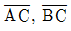
부재의 단면은 같고 재료도 같으며, A,B,C 점은 전부 힌지로 되어 있다.)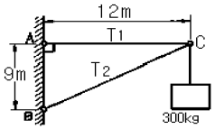
- 300kg
- 500kg
- 900kg
- 1500kg
(정답률: 알수없음)

2. 그림과 같이 높이가 a인 (A),(B),(C)에서 각각 도심을 지나는 X-X 축에 대한 단면 2차 모멘트의 크기의 순서로서 맞는 것은?
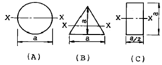
- A > B > C
- B < C < A
- A < B < C
- B > C > A
(정답률: 알수없음)
3. 그림에서 x축으로부터 빗금 부분의 도형에 대한 도심까지의 거리
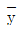
를 구하면 얼마인가?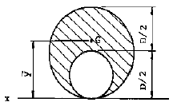
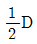
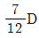
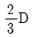
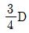
(정답률: 알수없음)
4. 훅크 법칙(Hooke's law)과 관계있는 것은?
- 소성
- 연성
- 탄성
- 취성
(정답률: 알수없음)
5. 지름이 5cm, 길이가 200cm인 탄성체 강봉을 15mm 만큼 늘어나게 하려면 얼마의 힘이 필요한가? (단, 탄성계수 E = 2,100,000kg/cm2)
- 약 2061 t
- 약 206 t
- 약 3091 t
- 약 309 t
(정답률: 알수없음)
6. 다음 그림과 같은 정정구조에서 D점의 휨모멘트는?
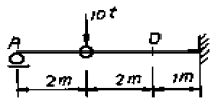
- - 20 t·m
- + 30 t·m
- - 40 t·m
- + 16 t·m
(정답률: 알수없음)
7. 다음 그림에서
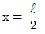
인 점의 전단력(S.F)은 몇 ton인가?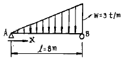
- 4
- 3
- 2
- 1
(정답률: 알수없음)
8. 보의 단면이 그림과 같고 지간이 같은 단순보에서 중앙에 집중하중 P가 작용할 경우 처짐 y1은 y2의 몇 배인가?
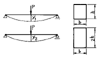
- 1
- 2
- 4
- 8
(정답률: 알수없음)
9. 그림과 같은 장주의 강도를 옳게 표시한 것은? (단, 재질 및 단면은 같다.)
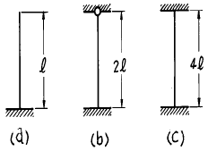
- (b) > (a) > (c)
- (a) < (b) = (c)
- (c) > (b) > (a)
- (a) = (c) < (b)
(정답률: 알수없음)
10. 그림과 같은 정사각형 막대 단면의 변형에너지는?
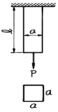
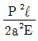
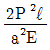
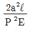
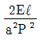
(정답률: 알수없음)
11. 다음 사다리꼴의 도심의 위치는?
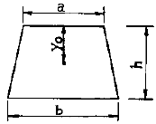
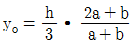
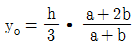
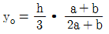
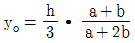
(정답률: 알수없음)
12. 다음 그림과 같은 단순보의 중앙에 집중하중이 작용할 때 단면에 생기는 최대전단응력은 얼마인가?
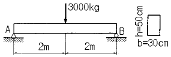
- 1.0kg/cm2
- 1.5kg/cm2
- 2.0kg/cm2
- 2.5kg/cm2
(정답률: 알수없음)
13. 다음 중 변형에너지에 속하지 않는 것은?
- 하중에 의한 외력의 일
- 축방향력에 의한 내력의 일
- 휨모멘트에 의한 내력의 일
- 전단력에 의한 내력의 일
(정답률: 알수없음)
14. 지름 D, 길이 ℓ 인 원형 기둥의 세장비는?
- 4ℓ/D
- 8ℓ/D
- 4D/ℓ
- 8D/ℓ
(정답률: 알수없음)
15. 다음의 단순보에서 C점의 휨모멘트 값은 얼마인가?
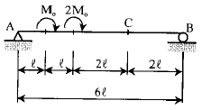
- Mo
- 1.5Mo
- 2Mo
- 3Mo
(정답률: 알수없음)
16. 다음 단순보의 지점 A에서의 처짐각 θA는 얼마인가? (단, EI는 일정하다.)
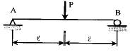
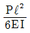
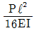
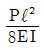
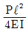
(정답률: 알수없음)
17. 그림의 구조물에서 유효강성 계수를 고려한 부재 AC의 모멘트 분배율 DFAC 는 얼마인가?
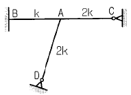
- 0.253
- 0.375
- 0.407
- 0.567
(정답률: 알수없음)
18. 다음 트러스에서 ①부재의 부재력은 얼마인가?
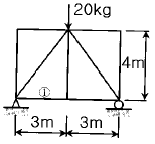
- 4.5 kg
- 6.0 kg
- 7.5 kg
- 8.0 kg
(정답률: 알수없음)
19. 3연 모멘트 방정식의 사용처로 가장 적당한 것은?
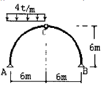
- 트러스 해석
- 연속보 해석
- 케이블 해석
- 아치 해석
(정답률: 알수없음)
20. 그림과 같은 아치의 지점A에서의 지점반력 RA 와 HA 값이 맞는 것은?( 단, RA는 수직반력, HA 수평반력 이다.)
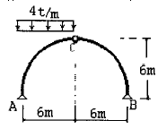
- RA = 18t(↑), HA = 18t(→)
- RA = 18t(↑), HA = 6t(→)
- RA = 18t(↑), HA = -18t(→)
- RA = 18t(↑), HA = -6t(→)
(정답률: 알수없음)
2과목: 측량학
21. 그림과 같이 격자의 크기가 가로, 세로 10m인 정방형 구역의 전체 체적은?
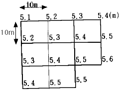
- 4220.5m3
- 4267.0m3
- 4297.5m3
- 4315.0m3
(정답률: 알수없음)
22. 도로설계에 있어서 설계속도가 2배가 되면 캔트(cant)의 크기는 몇 배로 하여야 하는가?
- 1배
- 2배
- 3배
- 4배
(정답률: 알수없음)
23. 수준측량시 중간점(I.P)이 많을 경우 가장 많이 사용하는 측량 방법은?
- 승강식 야장 기입법
- 횡단식 야장 기입법
- 고차식 야장 기입법
- 기고식 야장 기입법
(정답률: 알수없음)
24. 그림과 같이 토지의 한변 BC=60m 위의 점D와 AC=53m 위의 점E를 연결하여 직선 DE로서 △ABC의 면적을 2등분하려면 AE의 길이는?
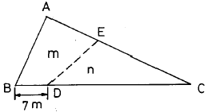
- 23m
- 25m
- 33m
- 43m
(정답률: 알수없음)
25. 평판측량의 후방교회법에서 시오삼각형이 생기는 가장 주된 원인은?
- 교회각이 너무 작을 때
- 도지가 늘어났을 때
- 평판의 표정이 불완전할 때
- 평판의 방위가 틀렸을 때
(정답률: 알수없음)
26. 수평위치를 결정하기 위하여 거리 100m에 설치한 측점의 방향관측에 10"의 오차가 있었다면 수평위치에 생기는 오차는?
- 0.48㎝
- 0.63㎝
- 0.95㎝
- 1.31㎝
(정답률: 알수없음)
27. 사진측량의 특성을 설명한 내용중 잘못된 것은?
- 정량적 및 정성적 관측을 할 수 있다.
- 정확도가 균일하다.
- 움직이는 물체의 측정이 불가능한 단점이 있다.
- 축척변경이 용이하다.
(정답률: 알수없음)
28. 하천측량을 실시하는 목적을 가장 잘 설명한 것은?
- 하천공사의 공사비 산출
- 평면도, 종단면도작성
- 각종 설계시공에 필요한 자료획득
- 하천 수위 단면 파악
(정답률: 알수없음)
29. 축척 1/5000 지형도 작성을 위한 측량에서 일정한 경사에 있는 A, B 두점의 수평거리는 270m, A점의 표고는 39m, B점의 표고는 27m였다. 35m 표고의 등고선은 도상에서 A점에 대응하는 점으로부터 얼마나 떨어져 있는가? (단, 이 지형도의 등고선 간격은 5m임.)
- 18mm
- 20mm
- 22mm
- 24mm
(정답률: 알수없음)
30. 갑과 을이 AB간 거리를 다수 관측하여 다음과 같은 결과를 얻었다. 이 결과로 부터의 간 최확거리는? (단, 갑 : 48.994± 0.008m, 을 : 49.003± 0.004m)
- 48.998m
- 49.001m
- 49.003m
- 48.996m
(정답률: 알수없음)
31. 삼각점 A에 기계를 세우고 삼각점 B가 보이지 않아 P를 보고 관측하여 T'=65° 42'39"를 읽었다면 T=∠DAB는 얼마인가? (단, S=2km, e=40cm, ø =256° 40' 이다.)
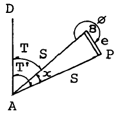
- 65° 39'58"
- 65° 40'20"
- 65° 41'59"
- 65° 42'20"
(정답률: 알수없음)
32. 등고선에서 최단거리의 방향은 그 지표의 어떤 형태를 나타내는 것인가?
- 하향경사를 표시한다.
- 상향경사를 표시한다.
- 최대경사방향을 표시한다.
- 최소경사방향을 표시한다.
(정답률: 알수없음)
33. 직접수준측량에 있어서 2㎞를 왕복하는데 오차가 3mm가 발생했다면 이것과 같은 정밀도로 4.5㎞를 왕복했을 때의 오차는?
- 8.50mm
- 5.75mm
- 6.75mm
- 4.50mm
(정답률: 알수없음)
34. 3㎞의 거리를 30m의 테이프로 측정하였을때 1회 측정의 부정오차를 ±4mm로 보면 부정오차의 총합은?
- ±30mm
- ±35mm
- ±40mm
- ±45mm
(정답률: 알수없음)
35. 지구의 곡률반경이 6,370km이며 삼각형의 구과량이 2.0″일 때 구면삼각형의 면적은?
- 193.4km2
- 293.4km2
- 393.4km2
- 493.4km2
(정답률: 알수없음)
36. 매개변수 A = 60m 인 클로소이드의 곡선길이가 30m일 때 종점에서의 곡선반경은?
- 60m
- 90m
- 120m
- 150m
(정답률: 알수없음)
37. 사진측량의 결과로 얻어진 그림과 같은 모델상에서 상호표정을 위해 사용해야 할 인자는?
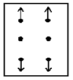
- ω
- k
- bz
- by
(정답률: 알수없음)
38. 원곡선 설치에 이용되는 식으로 틀린 것은? (단, R:곡선반경, I:교각(단위는 도(°)임.))
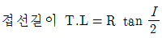
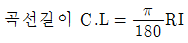
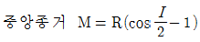
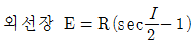
(정답률: 알수없음)
39. 다각측량에서 거리의 총합이 1250m일 때 폐합오차를 0.26m로 하려고 한다. 위거 또는 경거의 오차를 얼마로 하여야 하는가? (단, 위거 및 경거오차는 같은 것으로 가정한다.)
- 0.13m
- 0.18m
- 0.26m
- 0.52m
(정답률: 알수없음)
40. 교각 I= 90°, 곡선반지름 R = 200m인 단곡선에서 노선기점으로부터 교점 IP까지의 거리가 520m일 때 노선기점으로 부터 곡선시점까지의 거리는?
- 280m
- 320m
- 390m
- 420m
(정답률: 알수없음)
3과목: 수리학
41. 부체의 경심(M), 부심(C), 무게중심(G)에 대하여 부체가 안정되기 위한 조건은?
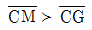
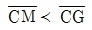
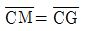
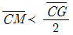
(정답률: 알수없음)
42. 관수로내의 흐름에서 마찰손실수두에 관한 설명으로 옳지 못한 것은?
- 관내면의 조도에 정비례한다.
- 관내의 유속(V)의 제곱에 정비례한다.
- 동점성 계수의 제곱에 반비례한다.
- 관의 길이(ℓ )에 정비례한다.
(정답률: 알수없음)
43. 직사각형 위어(weir)에서 유량에 비례하는 것은? (단, H는 위어의 월류수심이다.)
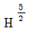
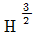
- H2
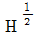
(정답률: 알수없음)
44. 비중이 0.92인 빙산이 비중 1.025의 해수면 위에 떠 있고 수면 위로 나온 빙산 용적이 180m3이면 빙산의 전체 용적은?
- 1,656m3
- 1,757m3
- 1,845m3
- 1,937m3
(정답률: 알수없음)
45. 어떤 유역에 내린 호우사상의 시간적 분포는 다음과 같다. 유역의 출구에서 측정한 지표유출량이 15mm일 때 ø-지표는?
- 2mm/hr
- 3mm/hr
- 5mm/hr
- 7mm/hr
(정답률: 알수없음)
46. 정수압에 대한 설명 중 옳은 것은?
- 유체의 점성력에 의해 크기가 좌우된다.
- 유체가 움직여도 좋으나 유체 입자 상호간의 상대적인 움직임이 없을 때에 적용된다.
- 유체의 흐름 상태에는 관계 없이 적용할 수 있다.
- 층류(laminar flow)에 한하여 적용할 수 있다.
(정답률: 알수없음)
47. 높이 6m,폭 1m의 구형수문이 수직으로 설치되어 있다. 물이 수문의 윗단까지 차있다고 하면 이 수문에 작용하는 전 수압의 작용점은?
- hc = 3m
- hc = 3.5m
- hc = 4m
- hc = 4.3m
(정답률: 알수없음)
48. 안지름 2㎝의 관내를 유량 Q가 31.4cm3/sec로 흐를 경우 레이놀즈(Reynolds)수는 얼마인가? (단, 점성계수 μ = 0.01g/(㎝.sec), 밀도 ρ = 1g/cm3임)
- 2,000
- 2,500
- 3,000
- 3,500
(정답률: 알수없음)
49. 삼각위어에서 수두 h의 측정에 2%의 오차가 발생하면 유량에는 몇 %의 오차가 발생되는가?
- 2%
- 3%
- 4%
- 5%
(정답률: 알수없음)
50. 어떤 유역에 자기기록지로부터 다음과 같이 집중호우가 있었다. 지속기간 15분 동안의 최대 강우강도는? 시
- 32mm/hr
- 48mm/hr
- 64mm/hr
- 72mm/hr
(정답률: 알수없음)
51. 직사각형 단면수로에 물이 흐를 경우 한계수심(hC)과 비에너지(He)의 관계식으로 옳은 것은?
(정답률: 알수없음)
52. 완전유체(完全流體)에 대한 설명으로 올바른 것은?
- 불순물이 포함되 있지 않은 유체를 말한다.
- 온도가 변해도 밀도가 변하지 않는 유체를 말한다.
- 비압축성이고 동시에 비점성인 유체이다.
- 자연계에 존재하는 물을 말한다.
(정답률: 알수없음)
53. 그림과 같은 우량관측소의 우량에 대하여 Thiessen 법으로 구한 이 유역의 평균 강우량은? (단, 강우량은 ㎜ 로 표시 하였음)
- 26.03㎜
- 24.24㎜
- 22.32㎜
- 21.33㎜
(정답률: 알수없음)
54. 대수층의 두께 3.8m, 폭 1.5m일 때 지하수의 유량은? (단, 상, 하류 두 지점 사이의 수두차 1.6m, 수평거리 520m, 투수계수 K=300m/day이다.)
- 4.28m3/day
- 5.26m3/day
- 6.38m3/day
- 7.46m3/day
(정답률: 알수없음)
55. 직경 d인 원형관을 세웠을 때의 상승고를 ha, 간격 d인 나란한 연직 평판을 세웠을 때의 상승고를 hb라고 할 때 옳은 것은? (단, 동일한 유체에 동일한 재료를 사용하였다.)
- ha=2hb
- hb=2ha
- ha=4hb
- hb=4ha
(정답률: 알수없음)
56. 관수로에서 밸브를 급히 차단시켰을 때 수위가 상승하는 현상은?
- 도수현상
- 수격작용
- 공동현상
- 서어징
(정답률: 알수없음)
57. 다음 중 지구상의 수자원에서 총수량이 가장 적은 것은?
- 지하수
- 하천수
- 해양
- 만년빙하
(정답률: 알수없음)
58. 수류의 연속방정식은 다음 중 어느 것으로부터 유도된 식인가?
- 도플러 법칙
- 운동량 보존의 법칙
- 에너지 보존의 법칙
- 질량 보존의 법칙
(정답률: 알수없음)
59. 단면적이 50m2인 직사각형 단면수로에 있어서 수리상 유리한 단면은?
- B = 5m, h = 10m
- B = 10m, h = 5m
- B = 1m, h = 50m
- B = 50m, h = 1m
(정답률: 알수없음)
60. 유출에 관한 설명 중 옳지 못한 것은?
- 직접유출(direct flow)은 강수 후 비교적 단기간내에 하천으로 흘러 들어가는 부분을 가리킨다.
- 기저유출(base flow)은 비가 오기 전의 건천후시의 유출을 말하며 지하수 유출과 시간적으로 지연된 지표하 유출에 의해 형성된다.
- 하천에 도달하기 전에 지표면 위로 흐르는 지표유출을 지표류(overland flow)라고 한다.
- 하천강수는 기저유출(base flow)에 포함된다.
(정답률: 알수없음)
4과목: 철근콘크리트 및 강구조
61. 전단철근의 설계기준항복강도 fy는 다음 어느 값을 초과할 수 없는가? (단, 1MPa=10kgf/cm2)
- 400MPa
- 420MPa
- 450MPa
- 480MPa
(정답률: 알수없음)
62. 강도설계법의 축하중을 받는 부재에서 나선철근 기둥의 최대 설계강도식은?
- øPn=0.85ø{0.85fck(Ag-Ast)+fyAst}
- øPn=0.80ø{0.85(Ag-Ast)+fyAst}
- øPn=ø{0.85fck(Ag-Ast)+fyAst}
- øPn=0.85fck(Ag-Ast)+fyAst
(정답률: 알수없음)
63. 옹벽에서 활동에 대한 저항력은 옹벽에 작용하는 수평력의 최소 몇 배 이상이어야 옹벽이 안정하다고 보는가?
- 1.5배
- 1.8배
- 2.1배
- 2.4배
(정답률: 알수없음)
64. 하중재하 기간이 5년이 넘은 경우 장기 처짐량은 얼마인가? (단, 단기의 순간탄성처짐량은 30mm이고, 이 보는 단순부재로서 중앙단면의 압축철근비 ρ'는 0.02이다.)
- 10mm
- 30mm
- 40mm
- 60mm
(정답률: 알수없음)
65. 부재축에 직각으로 배치하는 전단철근의 전단강도 Vs는 다음 중 어느 것인가? (단, Av:전단철근단면적, s:전단 철근간격, d:부재의 유효깊이, fy:철근의 항복강도)
(정답률: 알수없음)
66. 단철근 직사각형 단면의 균형 철근비(ρb)를 이용하여 균형 철근량을 구하는 식은 어느 것인가? (단, b = 폭, d = 유효깊이)
- As=ρbbd
(정답률: 알수없음)
67. 다음 사항 중 프리스트레스트 콘크리트의 장점이 아닌 것은 어느 것인가?
- 구조물의 자중이 가볍고 복원성이 우수하다.
- 철근콘크리트에 비하여 강성이 크고 진동이 적다.
- 부재에 확실한 강도와 안전율을 갖게 할 수 있다.
- 설계하중하에서는 균열이 생기지 않으므로 내구성이 크다.
(정답률: 알수없음)
68. 다음 중 전단보강을 위한 철근으로 주로 쓰이는 것은?
- 스터럽
- 주철근
- 부철근
- 정철근
(정답률: 알수없음)
69. 철근 콘크리트 보에 전단력과 휨만이 작용할 때 콘크리트가 받을 수 있는 설계 전단 강도(øVc)는 약 얼마인가? (단, bw= 300mm, d = 550mm, fck = 27MPa(=270㎏f/cm2))(오류 신고가 접수된 문제입니다. 반드시 정답과 해설을 확인하시기 바랍니다.)
- 101 kN(=10100㎏f)
- 108 kN(=10800㎏f)
- 114 kN(=11400㎏f)
- 122 kN(=12200㎏f)
(정답률: 알수없음)
70. 흙에 접하거나 옥외의 공기에 직접 노출되는 현장치기 콘크리트로 D25 이하 철근을 사용하는 경우 최소피복두께는 얼마인가?
- 20mm
- 40mm
- 50mm
- 60mm
(정답률: 알수없음)
71. 철근콘크리트 보의 공칭 휨강도 Mn을 계산하기 위한 가정 중 틀린 것은?
- 철근의 응력은 항상 항복강도fy를 사용한다.
- 콘크리트의 인장강도는 무시한다.
- 계수β1은 0.65와 0.85사이의 값으로 콘크리트 압축 강도fck에 따라 결정된다.
- 콘크리트 압축상단에서의 변형률은 0.003으로 가정한다.
(정답률: 알수없음)
72. 복철근 단면으로 설계하는 이유중 틀린 것은?
- 보의 높이가 제한되어 단철근 단면으로는 설계모멘트를 감당할 수 없을 때
- 정(+), 부(-) 모멘트가 한단면에서 반복되는 경우
- 처짐을 억제하여야 할 경우
- 연성을 극소화 시켜야 할 경우
(정답률: 알수없음)
73. PS 콘크리트에서 프리스트레스를 도입한 이후에 일어나는 프리스트레스 손실의 원인이 아닌 것은?
- 콘크리트의 탄성변형
- 콘크리트의 크리프
- 콘크리트의 건조수축
- PS강재의 릴랙세이션(relaxation)
(정답률: 알수없음)
74. 프리텐션 PSC 부재의 단면이 300mm× 500mm이고 120mm2의PS 강선 5개가 단면의 도심에 배치되어 있다. 초기 프리스트레스가 1,000MPa(=10000㎏f/mm2)이고 n=6일 때 콘크리트의 탄성 수축에 의한 프리스트레스 감소량은?
- 24 MPa(=240㎏f/mm2)
- 25 MPa(=250㎏f/mm2)
- 32 MPa(=320㎏f/mm2)
- 33 MPa(=330㎏f/mm2)
(정답률: 알수없음)
75. b = 200mm, d = 500mm, As = 2000mm2인 단철근 직사각형보의 응력 4각형의 깊이 a 는? (단, fy=400MPa(=4000㎏f/cm2), fck=25MPa(=250㎏f/cm2))
- 223 mm
- 145 mm
- 188 mm
- 109 mm
(정답률: 알수없음)
76. 리벳의 공칭 직경이 25mm인데 순단면을 계산할 때 리벳의 구멍은 얼마인가?
- 26.5mm
- 27mm
- 27.5mm
- 28mm
(정답률: 알수없음)
77. 그림과 같은 인장을 받는 표준 갈고리에서 정착길이란 어느 것을 말하는가?
- A
- B
- C
- D
(정답률: 알수없음)
78. 그림과 같은 판형(Plate Girder)의 각부 명칭중 틀리는 것은?
- A - 상부판(Flange)
- B - 보강재(Stiffener)
- C -덮개판(Cover plate)
- D -횡구(Bracing)
(정답률: 알수없음)
79. 어떤 강교의 교량 지간이 12m 일때 충격 계수는?
- 0.25
- 0.27
- 0.29
- 0.31
(정답률: 알수없음)
80. 그림과 같이 단순 지지된 2방향 슬래브에 집중 하중 P가 작용할 때, ab 방향에 분배되는 하중은 얼마인가?
- 0.941P
- 0.⑤9P
- 0.889P
- 0.111P
(정답률: 알수없음)
5과목: 토질 및 기초
81. 기초지반의 지지력이 작은 곳에서 하나의 큰 슬래브로 연결하여 지반에 작용하는 단위압력을 감소시키는 형식의 기초는 어느 것인가?
- 연속기초
- 독립기초
- 복합기초
- 전면기초
(정답률: 알수없음)
82. 흙의 동상피해를 막기 위한 대책으로 옳은 것은?
- 동결깊이 하부 흙을 동상현상이 잘 발생하지 않는 흙으로 치환한다.
- 가급적 지하수위를 높인다.
- 조립 필터층을 지하수위 보다 아래에 설치한다.
- 도로 포장시 포장하부 깊은 곳에 단열재료를 설치한다.
(정답률: 알수없음)
83. 도로의 평판재하 시험에서 1.25mm 침하량에 해당하는 하중 강도가 2.50㎏/cm2일 때 지지력계수(K)는?
- 20㎏/cm3
- 30㎏/cm3
- 25㎏/cm3
- 35㎏/cm3
(정답률: 알수없음)
84. 그림의 옹벽이 받는 전 주동 토압은? (단, Rankine의 토압이론으로 계산할 것)
- 1.5 t/m
- 3.0 t/m
- 4.15 t/m
- 8.33 t/m
(정답률: 알수없음)
85. 그림에서 분사현상에 대하여 안전율 3을 확보하려면 h를 최대 얼마로 하여야 하는가?
- 6.6㎝
- 10.4㎝
- 31.8㎝
- 43.3㎝
(정답률: 알수없음)
86. 다음 기초의 형식중 얕은 기초인 것은?
- footing 기초
- 철근콘크리트 말뚝기초
- 공기 케이슨 기초
- 우물통 기초
(정답률: 알수없음)
87. 그림과 같은 지반에 100t의 집중하중이 지표면에 작용하고 있다. 하중 작용점 바로 아래 5m 깊이에서의 유효 연직응력은 얼마인가? (단, γsat= 1.8t/m3 이고 영향계수 I=0.4775임)
- 1.91 t/m2
- 7.91 t/m2
- 10.91 t/m2
- 5.91 t/m2
(정답률: 알수없음)
88. 흙의 분류 중에서 유기질이 가장 많은 흙은?
- CH
- CL
- Pt
- OL
(정답률: 알수없음)
89. 직접 전단시험을 한 결과 수직응력이 12 ㎏/cm2일 때 전단 저항력은 10㎏/cm2 이었고 수직응력이 24㎏/cm2일 때 전단 저항력은 18㎏/cm2이었다. 이때 점착력을 계산한 값은?
- 2.0 ㎏/cm2
- 3.0 ㎏/cm2
- 4.56 ㎏/cm2
- 6.21 ㎏/cm2
(정답률: 알수없음)
90. 현장에서 채취한 흙 시료의 교란된 정도를 알기 위하여 시료 채취에 사용한 원통형 튜브(tube)의 규격을 조사한 결과 튜브의 외경이 5 ㎝이고 절단면의 내경은 4.7625 ㎝였다. 면적비 (Ar)은 얼마인가?
- 20 %
- 15 %
- 10.22 %
- 5.64 %
(정답률: 알수없음)
91. 흙의 습윤 단위무게(γt) 1.30g/cm3 이며 함수비가 60.5% 인 흙의 비중이 2.70 일때 포화 단위 무게를 구하면?
- 0.81g/cm3
- 1.51g/cm3
- 1.80g/cm3
- 2.33g/cm3
(정답률: 알수없음)
92. 점토지반상에 성토나 구조물등과 같이 하중이 급격히 재하되는 때의 점토지반의 단기간 안정을 검토하기 위해서는 어느 시험을 사용하는가?
- 비압밀비배수시험
- 비압밀배수시험
- 압밀배수시험
- 압밀비배수시험
(정답률: 알수없음)
93. 다음은 옹벽의 안정조건에 관한 사항이다. 잘못 설명된것은?
- 전도에 대한 저항휨모멘트는 횡토압에 의한 전도휨모멘트의 2.0배 이상이어야 한다.
- 지반의 지지력에 대한 안정성 검토시 허용지지력은 극한지지력의 1/2배를 취한다.
- 옹벽이 활동에 대한 안정을 유지하기 위해서는 활동에 대한 저항력이 수평력의 1.5배 이상이어야 한다.
- 침하의 현상이 일어나지 않으려면 기초지반에 작용하는 최대압력이 지반의 허용지지력을 초과하지 않아야 한다.
(정답률: 알수없음)
94. 내부 마찰각 ø = 0° 인 점토에서는 일반적으로 점착력은 일축압축강도의 몇배인가?
- 같다
- 1/2배
- 2배
- 8배
(정답률: 알수없음)
95. 흙의 다짐효과에 대한 설명으로 옳은 것은?
- 부착성이 양호해지고 흡수성이 증가한다.
- 투수성이 증가한다.
- 압축성이 커진다.
- 밀도가 커진다.
(정답률: 알수없음)
96. 현장에서 습윤단위중량을 측정하기 위해 표면을 평활하게 한 후 시료를 굴착하여 무게를 측정하니 1230g이었다. 이 구멍의 부피를 측정하기 위해 표준사로 채우는데 1037g이 필요하였다. 표준사의 단위중량이 1.45g/cm3이면 이 현장 흙의 습윤단위중량은?
- 1.72g/cm3
- 1.61g/cm3
- 1.48g/cm3
- 1.29g/cm3
(정답률: 알수없음)
97. 주동토압을 PA, 수동토압을 PP0, 정지토압을 PO 라 할때 크기의 순서는?
- PA > PP > PO
- PP > PO > PA
- PP > PA > PO
- PO > PA > PP
(정답률: 알수없음)
98. 길이 10m인 나무말뚝을 사질토 중에 박아 넣을 때 drop hammer중량 800㎏,낙하고 3.0m, 최종관입량 2㎝일 때의 말뚝의 허용 지지력을 Sander공식으로 구하면 얼마인가?
- 12t
- 120t
- 150t
- 15t
(정답률: 알수없음)
99. 흙의 입도분석 결과 입경가적 곡선이 입경의 좁은 범위내에 대부분이 몰려있는 입경분포가 나쁜 빈입도(poor grading)일때 다음중 옳지 않은 것은?
- 균등계수는 작을 것이다.
- 공극비가 클것이다.
- 다짐에 적합한 흙이 아닐것이다.
- 투수계수가 낮을 것이다.
(정답률: 알수없음)
100. 공기 케이슨 공법에 관한 설명중 옳지 않은 것은?
- 우물통기초보다 침하공정이 빠르다.
- 압축공기를 사용하기 때문에 소규모 공사에선 비경제적이다.
- 아주 깊은 곳까지 확실하게 시공할 수 있다.
- 장애물 제거가 용이하고 지지력 측정이 용이하다.
(정답률: 알수없음)
6과목: 상하수도공학
101. 계획급수인구가 5,000명이고 1인 1일 최대급수량이 200ℓ이며, 여과속도는 130m/day인 급속여과지의 면적은?
- 7.69m2
- 15.38m2
- 30.76m2
- 76.92m2
(정답률: 알수없음)
102. 배수관을 망상(그물모양)으로 배치하는 방식의 특징이 아닌 것은?
- 고장의 경우 단수염려가 없다.
- 관내의 물이 정체하지 않는다.
- 관로해석이 편리하고 정확하다.
- 수압분포가 균등하고 화재시에 유리하다.
(정답률: 알수없음)
103. 어느 도시의 인구증가 현황을 조사분석한 결과 매년 증가율이 8%로서 일정하였다. 이 도시의 15년후의 등비 급수법에 의한 추정인구는 약 얼마인가? (단, 현재인구는 150,000인 이다.)
- 531,200명
- 515,800명
- 498,500명
- 475,800명
(정답률: 알수없음)
104. 하수관거의 단면형상 선정시에 고려할 사항으로서 가장 거리가 먼 것은?
- 수리학적으로 유리할 것
- 하중에 대해 경제적일 것
- 시공이 간편하고 비용이 저렴할 것
- 역학계산이 간단할 것
(정답률: 알수없음)
1⑤. 합류식 하수관거에 대한 설명중 옳지 않은 것은?
- 초기 우수에 포함되어 있는 지상의 먼지나 지면상의 오염물질을 운반하여 처리장에서 처리할 수 있다.
- 관거가 1개이기 때문에 시공이 비교적 쉽고, 건설비가 적게 든다.
- 하수처리장에 유입하는 하수의 수질변동이 비교적적다.
- 관지름이 크므로 관의 점검 및 청소가 용이하다.
(정답률: 알수없음)
106. 비중이 0.2인 입자의 부상속도는 비중이 0.6인 입자의 부상속도의 몇 배인가? (단, 다른 모든 조건은 동일하다.)
- 9
- 6
- 3
- 2
(정답률: 알수없음)
107. 배수 방식 중 자연유하식의 장점이 아닌 것은?
- 평상시 수압과 수량조절이 양호하다.
- 양수장치에 따른 동력비가 없다.
- 정전시 단수의 염려가 없다.
- 운전요원 등의 인건비가 감소된다.
(정답률: 알수없음)
108. 하수처리 방법중 물리적 처리방법이 아닌 것은?
- 침전
- 여과
- 흡착
- 환원
(정답률: 알수없음)
109. 하수처리시설의 용량을 결정하는 기준이 되는 기본적하수량은?
- 계획 1일 평균오수량
- 계획 1일 최대오수량
- 계획 시간 최대오수량
- 계획 1인 1일 최대가정오수량
(정답률: 알수없음)
110. A도시는 하수의 배제방식으로서 분류식을 선택하였다. 하수처리장의 가동 후 계획된 오수량에 비해 유입 오수량이 적으며 공공수역의 오염이 해결되지 않았다. 다음 중 이 문제에 대한 가장 큰 원인으로 생각할 수 있는 것은?
- 우수관의 시공불량
- 우수관의 지하수 침투
- 오수관의 우수관으로의 오접
- 하수배제 지역의 강우 빈발
(정답률: 알수없음)
111. 우수량이 많아서 일시에 펌프에 의한 양수가 곤란한 경우 우수를 일시 저류하는 시설은?
- 흡입조
- 토출조
- 우수조정지
- 침사조
(정답률: 알수없음)
112. 배수면적이 1ha인 지역에 강우강도 , 유출계수 0.85, 유달시간 9분 일 때 우수량은 얼마인가?
- 0.085m3/sec
- 0.236m3/sec
- 2.36m3/sec
- 85.0m3/sec
(정답률: 알수없음)
113. 다음 중 상수도의 설계기준이 되는 것은?
- 계획1일 최대강우량
- 계획1일 최대급수구역
- 계획1일 최대급수인구
- 계획1일 최대급수량
(정답률: 알수없음)
114. 내경 1,000mm의 강관에 압력수두 100m의 물이 흐르게 하려면 강관의 최소 두께는 얼마로 해야 하는가? (단, 강재의 허용인장응력은 1,100kg/cm2이다.)
- 4.6mm
- 5.2mm
- 10.5mm
- 12.1mm
(정답률: 알수없음)
115. 하수처리에 있어 혐기성 소화법에 관한 설명 중 옳지 않은 것은?
- 슬러지의 양을 감소시킨다.
- 슬러지를 분해하여 안정화 시킨다.
- 부하나 pH의 변동이 클 때 유리하다.
- 유효한 자원인 메탄을 얻을 수 있다.
(정답률: 알수없음)
116. 염소 소독시 살균력이 증가되는 온도와 pH의 조건은?
- pH와 수온이 높을 때
- pH는 낮고 수온이 높을 때
- pH는 높고 수온이 낮을 때
- pH와 수온이 낮을 때
(정답률: 알수없음)
117. 송수관로를 결정하는데 고려할 사항이 아닌 것은?
- 가급적 단거리가 되어야 한다.
- 이상수압을 받지 않도록 한다.
- 관로의 수평 및 연직방향의 급격한 굴곡은 피한다.
- 송수관로는 반드시 자연유하식으로 해야 한다.
(정답률: 알수없음)
118. 취수탑에 대한 설명으로 잘못된 것은?
- 년중 수위변화의 폭이 큰 지점에는 부적합하다.
- 취수탑의 취수구 전면에는 스크린을 설치한다.
- 최소 수심이 갈수기에도 2m 이상은 확보되어야 한다.
- 토사유입의 가능성이 큰 하천에서는 유입속도를 15∼30cm/sec 정도로 한다.
(정답률: 알수없음)
119. 맨홀의 설치장소로 타당하지 않은 곳은?
- 하수관의 방향이 바뀌는 곳
- 하수관의 관경이 변하는 곳
- 하수관의 경사가 변하는 곳
- 하수관내 수량변화가 적은 곳
(정답률: 알수없음)
120. 호수 내에 조류(algae)가 많이 있을 때 pH는?
- 하강한다.
- 상관관계가 없다.
- 상승한다.
- 상승하다가 하강한다.
(정답률: 알수없음)
또한, T1은 A와 B점에서의 부재의 받는 힘이므로, T1 = 400g 이다.
따라서, T2 = 800g - 400g = 400g = 500kg 이다.
즉, C점에 매달린 300kg의 물체가 T2 부재에 작용하는 힘은 500kg이다.